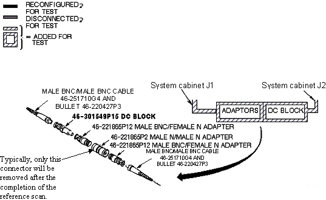

Illustration 1:
CONNECTIONS FOR INITIAL AMPLITUDE SCAN

NOTE:
Adapters not shown in
Illustration 1
can be added, if necessary, from the RF Cables Kit. Usage of the inline DC Block as shown in
Illustration 1
is mandatory.